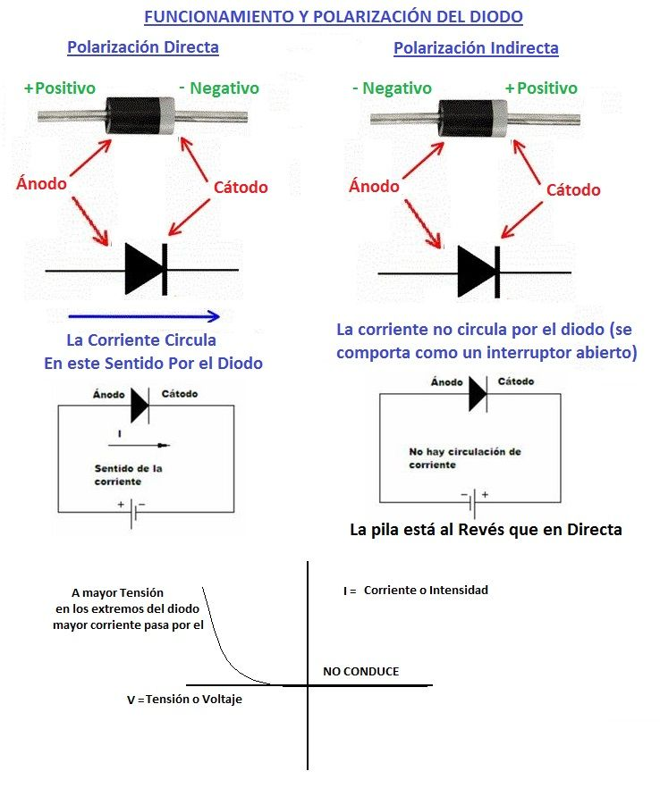
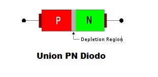

El Diodo es un componente electrónico que solo permite el paso de la corriente en un sentido (por eso es un semiconductor, por que es conductor solo en determinadas condiciones).
Si el ánodo (triángulo en el símbolo y patilla de la parte negra en el diodo real) se conecta al polo positivo y el cátodo (Raya en el símbolo y patilla de la franja gris en el diodo real) al negativo, entonces por el diodo podrá circular corriente, sería similar a un interruptor cerrado. Así conectado, se dice que está polarizado directamente. Si lo conectamos al revés la corriente no pasará a través del diodo, será como un interruptor abierto. Fíjate que en el diodo real, para identificar el cátodo, es la parte de la banda de color gris del diodo.

El diodo polariado directamente permite el flujo a través de él de los electrones, o lo que es lo mismo permite el paso de la corriente eléctrica. En polarización inversa no permite el paso de lo electrones por él.
Arriba puedes ver la gráfica típica de funcionamiento de un diodo. Para tensiones con polarización directa del diodo, según aumentamos la tensión en los bornes del diodo (patillas o extremos) va aumentando la corriente que circula por él. Lógicamente el diodo tendrá una tensión máxima de trabajo que no se podrá sobrepasar porque se quemaría. Para tensiones con polarización negativa no conduce y por lo tanto, por mucho que aumentemos la tensión no se producirá corriente alguna a través del diodo.
Los diodos semiconductores tienen la valiosa propiedad de que los electrones solamente fluyen en una dirección a través de ellos y, como resultado, actúan como un rectificadores. Son la estructura fundamental de los semiconductores y muchos otros componentes electronicos se fabrican teniendo como base a los diodos. Los diodos tienen una estructura electrónica llamada Union PN, es decir son la unión de un material semiconductor llamado N con otro llamado P.

Solo hay unos diodos especiales que conducen en tensiones contrarias, es decir polarizados inversamente, son los llamados diodos zener.
Otro tipo de diodos son los Diodos Led, que emiten luz cuando están polarizados directamente, pero la mayoría de los diodos se utilizan como rectificadores de corriente, un puente de diodos (varios diodos conectados).
Este rectificador de diodos es muy utilizado en las Fuentes de Alimentación. Una onda senoidal alterna a la entrada se convierte en una onda continua rectificada por los diodos.